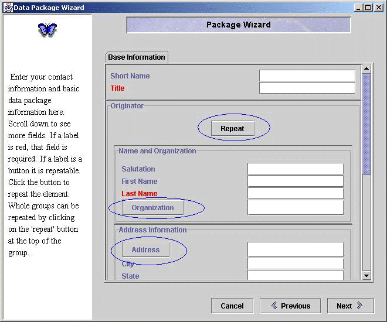
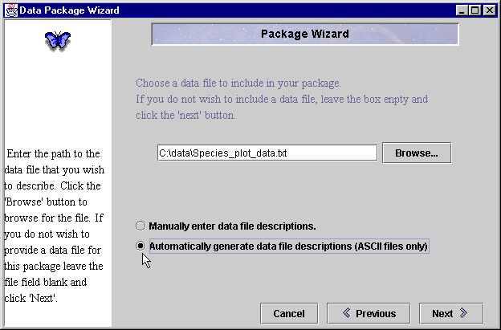
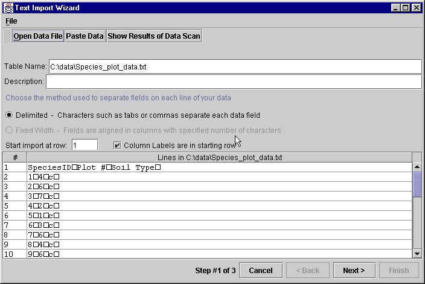
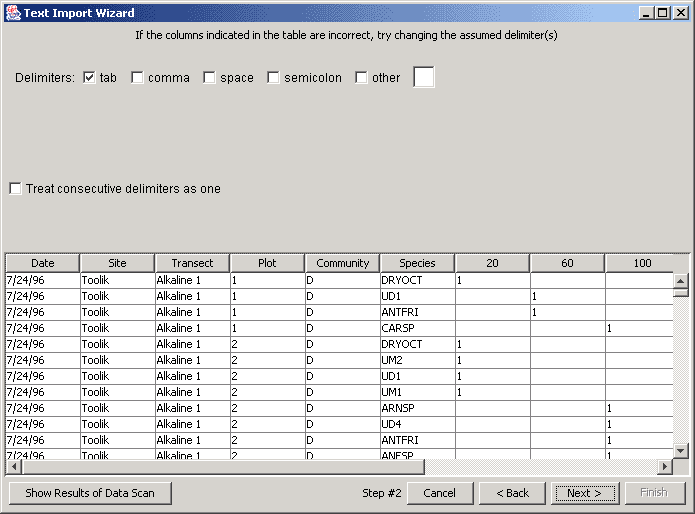
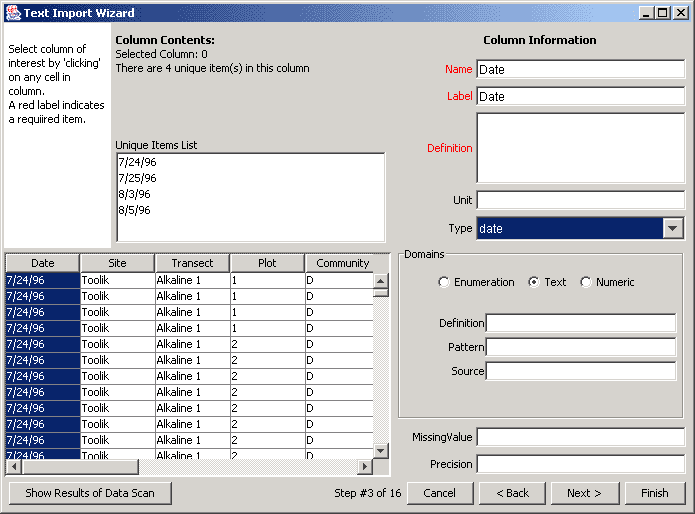
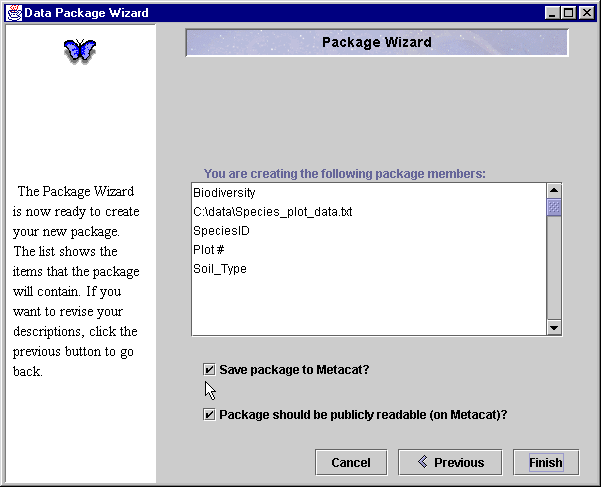

Morpho
User Guide
|
Morpho
User Guide
|
||||||
| KNB Home | Data | People | Informatics | Biocomplexity | Education | Software | |
| Creating a new Data Package | |
|
The introductory screen of the Package Wizard.
The first text entry screen of the Package Wizard. The repeat buttons are circled in blue. Fields such as Title, Name, and Keywords are what will be used, by yourself and other ecologists, to "find" this package during a search function. Notice that when the 'Repeat' button is pressed, all of the fields in the 'Originator' group will be repeated. For example, if there were several authors, PI's, etc., involved with this data package you would press the 'Repeat' button to create the new fields for them.  Enter the path to your data or browse to find it. If no data file is chosen, a data file is not associated with this package and only metadata is created. Leave the field blank if you do not want to attach data to your metadata and click next. Select the button to automatically generate a data file description. This process starts the "Text Import Wizard". The Text Wizard functions best with text data and standard delimiter. Click next.  The Text Import Wizard - Screen 1  Text Import Wizard - Screen 2  Text Import Wizard - Screen 3  This is the final screen of the package wizard. Notice that by default your package will be saved to Metacat and that the package will be publicly readable.  |
|
|
|
 Previous
Editing a Data Package Previous
Editing a Data Package
|